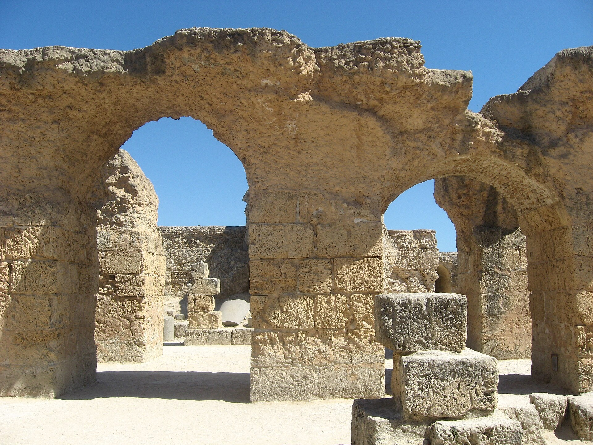

Casi todo lo que sabemos de Pelagio nos llega en las comillas de quien lo estaba refutando. Y bajo un solo rótulo hay tres hombres que dijeron cosas distintas.
Todo el mundo sabe qué enseñaba Pelagio. Que el hombre puede salvarse por sus propias fuerzas, que la gracia no hace falta, que el ser humano nace limpio y basta con esforzarse. Es el manual del pelagianismo, se enseña así y se repite así.
El problema es que casi nada de eso está en Pelagio, y que la razón por la que sabemos tan poco de él es la misma por la que lo sabemos todo de Agustín: uno ganó y el otro no.
Hay que empezar por aquí, porque condiciona todo lo demás. Casi todo lo que se atribuye a Pelagio nos llega a través de sus adversarios.
Sus obras mayores —De natura, De libero arbitrio, De fide Trinitatis— sobreviven sólo en fragmentos citados por Agustín para refutarlos. El De natura lo conocemos porque Agustín lo cita en su propio De natura et gratia. Es decir: leemos a Pelagio en las comillas de quien lo estaba desmontando.
Lo que sí tenemos en extensión es su comentario a las trece epístolas paulinas, y tiene una historia que parece inventada: se transmitió durante siglos bajo el nombre de Jerónimo, y no fue restituido a Pelagio hasta el trabajo de H. Zimmer, con edición crítica de Alexander Souter en los años veinte. Y tenemos su Libellus fidei, la profesión de fe que dirigió al papa Inocencio.
La consecuencia metodológica es de primer orden y hay que enunciarla sin rodeos: «pelagianismo» es en buena medida una construcción doxográfica de sus adversarios. Cualquier cita de «lo que Pelagio enseñaba» debería indicar de dónde procede.
Segundo problema, y explica gran parte del enredo: bajo el rótulo «pelagianismo» hay tres hombres distintos que dijeron cosas distintas.
Pelagio, hacia 354-418, asceta britano o irlandés activo en Roma. Su preocupación central es moral y pastoral: la responsabilidad, contra el fatalismo y la resignación. Su tesis más citada es posse non peccare, que el ser humano puede no pecar si quiere. Y —esto es lo importante— no niega la gracia.
Celestio, laico, abogado y monje, seguidor suyo y muchísimo más combativo y sistemático. Es su candidatura al diaconado en Cartago la que desencadena el proceso, y son sus proposiciones las que se condenan. Dicho como se debe decir: buena parte de lo que llamamos pelagianismo es celestianismo.
Juliano de Eclana, obispo depuesto en 418, el intelectual del grupo y adversario directo de Agustín durante once años. Sabía griego, y fue él quien presionó a Agustín sobre el texto de Romanos 5:12, como vimos dos entregas atrás. Su acusación central era que Agustín, al hacer del mal algo transmitido con la naturaleza, recaía en el maniqueísmo de su juventud. Y muchas de las tesis más duras que se atribuyen al pelagianismo son de él, no de Pelagio.
De 411 a 529. En cada uno, a quién se juzga y qué se decide —pero sobre todo qué no se decide, que es la columna que suele faltar y donde están las sorpresas. Pulsa cada actuación.
Léalas otra vez buscando una negación de la gracia. No hay ninguna. Lo que se condena es una antropología.
Con el expediente delante, se puede reconstruir su posición sin pasar por el filtro de la polémica.
Afirmó la gracia, y la entendía en tres sentidos: la creación misma del libre albedrío; la revelación divina, es decir la Ley y el ejemplo y la enseñanza de Cristo; y el perdón de los pecados en el bautismo. Se puede discutir si eso es suficiente gracia —Agustín pensaba que no, y ahí está el debate real—, pero decir que negaba la gracia es simplemente inexacto.
Rechazó la transmisión del pecado por generación: para él el mal se propaga por ejemplo y costumbre, no por herencia física. En su comentario a Romanos 6 rechaza expresamente la lectura maniquea, que el pecado esté mezclado en la naturaleza del cuerpo. Su categoría alternativa a la propagación es la del ejemplo.
Y sobre los niños, el dato que casi siempre se omite: los consideraba inocentes, sí, pero admitía el bautismo de niños. Le daba otro sentido, y concedía a los no bautizados la «vida eterna» aunque no el «Reino de Dios», razonando que Dios no condenaría a quien no es personalmente culpable. No estaba negando una práctica: estaba proponiendo otra explicación de la misma práctica.
Preocupación moral y pastoral: la responsabilidad, contra el fatalismo. Posse non peccare. Afirmó la gracia en tres sentidos y admitió el bautismo de niños, dándole otro significado.
Su candidatura al diaconado desencadena el proceso y sus seis proposiciones son las condenadas. Buena parte de lo que llamamos pelagianismo es, en rigor, celestianismo.
Once años de polémica directa con Agustín. Sabía griego y le presionó sobre Romanos 5:12. Lo acusó de recaer en el maniqueísmo. Muchas de las tesis más duras del «pelagianismo» son suyas.
Las obras mayores de Pelagio sólo sobreviven en fragmentos citados por Agustín para refutarlas. Su comentario a Pablo circuló durante siglos bajo el nombre de Jerónimo.
En 2018, Ali Bonner publicó un libro que ha desplazado bastante la conversación. Su tesis es que el «pelagianismo» como herejía coherente es en buena medida una ficción polémica construida, y que las posiciones de Pelagio estaban dentro de la corriente ascética cristiana corriente de su tiempo. Lo argumenta examinando la difusión manuscrita y el vocabulario del ascetismo, para mostrar que las ideas atribuidas a un «movimiento pelagiano» eran lugares comunes.
Y aquí hay que hacer lo que este blog hace siempre con una tesis nueva y atractiva: decir cómo la recibió el campo. Generó una discusión considerable —trece reseñas en revistas de primera línea— y no todos los reseñadores quedaron convencidos. Así que la formulación prudente es: Bonner ha argumentado que el pelagianismo es en gran medida una construcción polémica; su tesis es influyente y discutida. No es un nuevo consenso, y presentarla como tal sería exactamente el vicio contra el que ella misma escribe.
Al reunir las imágenes de esta serie apareció un detalle que no era el que buscábamos. De Agustín existe el fresco de Letrán, del siglo VI, y hay después mil años de retratos: Botticelli, Carpaccio, manuscritos iluminados, altares enteros. De Pelagio no existe ninguna imagen. Ni de Celestio, ni de Juliano de Eclana.
No es un hueco en el archivo: es el archivo funcionando como funciona siempre. No se pintan retratos de los condenados, no se copian sus libros, y cuando alguien los copia —como ocurrió con el comentario a Pablo— lo hace bajo otro nombre. Lo que sabemos de esta discusión lo sabemos porque el lado que ganó citó al que perdió para refutarlo, y esa es una condición de la evidencia, no una casualidad.
Conviene tenerlo presente al leer cualquier historia de una herejía. La entrega siguiente, que cierra la serie, va precisamente sobre lo que ocurre cuando una distinción se construye mucho después de los hechos: el Oriente cristiano, Trento, y una antítesis que en gran medida es obra del siglo XX.

Decir que Pelagio no negaba la gracia, que las proposiciones condenadas eran de Celestio y que fue absuelto en Dióspolis no equivale a darle la razón. Había un desacuerdo real y de fondo —sobre qué puede una voluntad humana y qué hace falta para que pueda—, y ese desacuerdo no se resuelve con precisiones de expediente. Lo que las precisiones hacen es distinto: permiten discutir el desacuerdo real en lugar de una caricatura. Y de paso recuerdan que la historia de las doctrinas la escriben, casi siempre, quienes ganaron las discusiones.
Es dato firme que las obras mayores de Pelagio sobreviven sólo en fragmentos citados por sus adversarios, y que su comentario a las trece epístolas paulinas se transmitió bajo el nombre de Jerónimo hasta que H. Zimmer lo restituyó, con edición crítica de Alexander Souter y traducciones posteriores de Theodore de Bruyn y Thomas Scheck. Lo es la distinción entre Pelagio, Celestio y Juliano de Eclana, y que las seis proposiciones condenadas en Cartago 411-412 las presentó Paulino de Milán en el proceso abierto por la candidatura de Celestio. Lo es que Pelagio fue absuelto en Dióspolis en 415 por obispos orientales; que admitía el bautismo de niños con otro sentido; que Juliano sabía griego y presionó a Agustín sobre Romanos 5:12; y que Éfeso 431 actuó por vía disciplinar y no definió doctrinalmente el pecado original.
Debate abierto: la tesis de Ali Bonner sobre el pelagianismo como construcción polémica, influyente y no aceptada por todos sus reseñadores. Y una cautela sobre nuestras propias fuentes: no hemos podido cotejar el texto latino literal del comentario de Pelagio a Romanos 5:12 —la fórmula per exemplum vel per formam que suele citarse— en las ediciones de Souter o de Bruyn, y por eso no se cita aquí entre comillas. Los cánones concretos de Cartago 418 y de Orange 529 se manejan por síntesis y no por el texto conciliar numerado, de modo que este artículo describe su contenido sin dar números de canon.
La historia de una herejía tiene un sesgo incorporado que no se puede eliminar, sólo declarar: los textos del perdedor se conservan mal o no se conservan, y los que se conservan pasan por las manos del ganador. Eso no invalida lo que sabemos, pero obliga a decir de dónde viene cada cosa. Este artículo no pretende decidir quién tenía razón sobre la gracia y la voluntad, que es una pregunta teológica y sigue abierta para quien quiera hacérsela. Pretende que la discusión, si se tiene, sea sobre lo que se dijo.